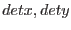

evigweight applies to inhomogeneous extended sources. The source spectrum (shape and flux) depends on the region considered (ie on the sky coordinates). The instrument (telescope+detector) response is not flat, ie the effective area at a given energy depends on the position in the focal plane, defined by  the detector coordinates (DETX,DETY columns).
evigweight sets the stage for an alternative method to building an exposure map (via eexpmap) adapted to the spectral selection or an effective area (via arfgen) adapted to the spatial selection, in parallel to images and spectra. The idea is to `correct' each photon so that the derived event list is equivalent to what one would get for a flat instrument.
Because the weight is computed for each event on the basis of its own detector coordinates, the method is not sensitive to pointing variations of the telescope. Because the event's own energy is used, it makes no assumption about the spatial or spectral repartition of the source.